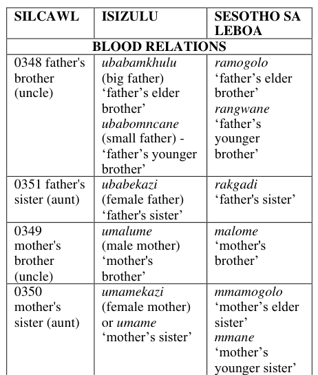
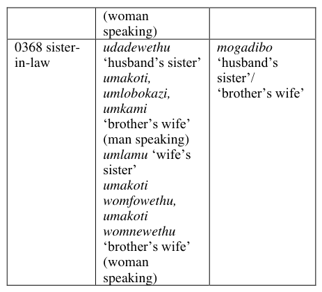

RAIL 2020Tafsiri ya mashine
Kukabiliana na Changamoto za Kuendeleza Rasilimali za Lugha Mbalimbali kwa Lugha Zinazokosa Rasilimali: Kesi ya Mradi wa African Wordnet
Tafsiri ya mashine, haijakaguliwa na binadamu. Makala asili ndiyo toleo la rejeo; sentensi zilizopigiwa mstari ni zile ambazo ukaguzi wa kiotomatiki haukuwa na uhakika nazo.
Proceedings of the first workshop on Resources for African Indigenous Languages.
Tafsiri ya Ernst van Gassen (Arktos AI Lab), yenye leseni CC BY-NC 4.0 kama makala asili. Matumizi tena yanaruhusiwa kwa kutaja mwandishi, kwa matumizi yasiyo ya kibiashara tu. Waandishi asili hawajakagua wala kuidhinisha tafsiri hii.
Maandishi matupu ya kutumia tena, pamoja na leseni yake: Kiswahili · LESENI
Taasisi
Marissa Griesel, Sonja Bosch
University of South Africa (UNISA)
Pretoria, South Africa
Anwani za barua pepe zimeondolewa kwa sababu za faragha. Zinapatikana katika PDF asilia.
Muhtasari
Kuunda mtandao mpya wa maneno si kazi rahisi na wakati lugha inayolengwa inakosa rasilimali kama ilivyo kwa lugha zinazojumuishwa katika mtandao wa lugha nyingi wa Afrika (AfWN), watengenezaji wanahitaji kutegemea sana ujuzi wa binadamu. Wakati wa hatua tofauti za maendeleo ya AfWN, tulijumuisha mbinu mbalimbali za kasi ili kurahisisha kazi ngumu na inayochukua muda mrefu. Mbinu kadhaa zimeonyesha ufanisi huku nyingine zikionekana kuwa na athari chache chanya kwenye kiwango cha kazi. Kama ilivyo kwa lugha nyingine nyingi zenye uchache wa rasilimali, modeli ya kupanua ilitekelezwa kote, hivyo kutegemea data chanzi ya Kiingereza kama vile Wordnet ya Kiingereza ya Princeton (PWN) ambayo kisha hutafsiriwa katika lugha lengwa kwa dhana kwamba lugha mpya inashiriki muundo wa msingi na PWN. Karatasi hii inajadili baadhi ya matatizo yaliyojitokeza njiani na inabainisha uwezekano mbalimbali wa hatua za uhakikisho wa ubora (nusu) otomatiki na uboreshaji zaidi wa AfWN ili kuhakikisha ukuaji wa haraka. Katika karatasi hii tunalenga kuonyesha baadhi ya masomo yaliyojifunza kutokana na uzoefu wa vitendo ili kurahisisha miradi kama hiyo, hasa kwa lugha kutoka nchi nyingine za Afrika.
Maneno Muhimu
wordnet ya lugha nyingi; lugha zenye uchache wa rasilimali; Lugha za Afrika
1. Utangulizi
Mradi wa African Wordnet (AfWN) una lengo la kukuza wordnet kwa lugha za asili, ikiwa ni pamoja na Setswana, isiXhosa, isiZulu, Sesotho sa Leboa, Tshivenḑa, Sesotho, isiNdebele, Xitsonga na Siswati. Awamu ya hivi karibuni ya maendeleo inafadhiliwa na Kituo cha Afrika Kusini cha Rasilimali za Lugha za Kidijitali (SADiLaR) na inaendelea kuanzia 2018 hadi mwisho wa Februari 2020, huku nyongeza hadi 2022 ikizingatiwa kwa sasa. Toleo lijalo la rasilimali za lugha za AfWN linatayarishwa kwa sasa kwa ajili ya usambazaji na litapatikana chini ya masharti yale yale na kwenye jukwaa lile lile kama matoleo ya kwanza kwa lugha tano za awali (UNISA, 2017). Pia angalia Bosch na Griesel (2017) kwa maelezo ya kina.
Ingawa lengo hapo awali lilikuwa lugha rasmi za Afrika Kusini, mradi pia unajitahidi kuanzisha mtandao wa miradi kote Afrika na timu zinazowakilisha Lugha za Afrika nyingine zikiongeza WordNet zao wenyewe. Katika wasilisho hili tunatumai kushiriki baadhi ya changamoto na vikwazo vya kipekee vilivyojitokeza wakati wa kuunda rasilimali changamano ya kiufundi kukiwa na zana chache sana au hakuna kabisa za ziada za uchakataji wa lugha asilia (NLP). Tunazungumza mifano ya tofauti za kisarufi na kutangaza njia za kuwakilisha mifano hii katika hifadhidata rasmi kama vile wordnet. Zaidi ya hayo, pia tunaangalia baadhi ya mitego ya kawaida wakati wa kutumia Kiingereza (Uingereza au Marekani) kama lugha chanzo kwa ajili ya uundaji wa rasilimali kwa mikono, tukifungua nafasi kwa majadiliano zaidi kati ya wataalamu wa lugha, watengenezaji na watumiaji wa rasilimali za lugha za Afrika ili kuhakikisha umuhimu wake ndani ya nyanja zinazopanuka kwa kasi za teknolojia ya lugha ya binadamu ya Afrika (HLT) na ubinadamu wa kidijitali (DH).
2. Usuli
2.1 Mradi wa AfWN
Ordan na Wintner (2007) pamoja na Vossen et al. (2016) wanaeleza mbinu mbili za kawaida zinazotumika kutengeneza WordNet, kulingana na idadi na ukubwa wa nyenzo za ziada zilizopo, uzoefu wa timu na muundo msingi wa kisarufi wa lugha inayoundwa. Njia ya kuunganisha ni maarufu kwa mitandao ya maneno mapya yenye rasilimali nyingi za ziada kama vile kamusi za lugha mbili, sarufi zinazoelezea na mikusanyo ya matini. Wordnet hujengwa kwa kujitegemea kutoka kwa wordnet yoyote iliyopo kama rasilimali huru, baada ya hapo mchakato tofauti unafuatiwa ili kulinganisha wordnet iliyoundwa hivi karibuni na Princeton WordNet (PWN) (Chuo Kikuu cha Princeton, 2020; na Fellbaum, 1998). PolNet, wordnet ya Kipolandi (Vetulani et al. 2010) inayotegemea kamusi ya Kipolandi ya lugha moja yenye ubora wa hali ya juu, ni mfano mzuri wa mradi unaoifuata njia hii. Katika hali ya lugha zenye rasilimali chache, PWN inaweza kutumika kama mfano wa kuigwa katika kuendeleza mtandao mpya wa maneno. Hii inajulikana kama mfano wa kupanua ambapo wordnet ya chanzo, kawaida PWN ya Kiingereza, inatafsiriwa katika lugha lengwa, ikiwa na dhana kwamba lugha mpya inashiriki muundo wa msingi na PWN. WordNet ya Kikroeshia ni mfano wa WordNet inayotegemea modeli ya kupanua kutokana na ukosefu wa leksimu zilizopangwa kisemantiki (cf. Raffaelli et al., 2008:350).
Kwa kawaida, wordnets zinazofuata njia hii hazina ufikiaji wa rasilimali nyingi za kidijitali na zinategemea sana maarifa ya lugha ya timu ya maendeleo. Mradi wa AfWN pia ulifuata njia ya mwisho ili kujenga wordnets kwa lugha za asili kwa njia ya kutofautiana lakini sambamba. Awali, mradi ulijumuisha lugha nne tu - isiZulu, isiXhosa, Setswana na Sesotho sa Leboa - ili kuruhusu timu kupata uzoefu na kuanzisha miundombinu kwa ajili ya upanuzi zaidi. Mara tu mradi ulipoanzishwa na ufadhili zaidi ulipopatikana, Tshivenḑa na baadaye lugha zilizobaki ziliongezwa. Timu pia awali ililenga tu kutoa mifano ya matumizi kwa synset za msingi (zikijumuisha lemma, aina za maneno na lebo za kikoa) na tu katika hatua ya tatu ya maendeleo ilianza kuongeza fasili kwa synset zilizopo. Lugha nyingine zilikuwa na rasilimali nyingi zaidi kuliko nyingine, na sehemu inayofuata itatoa muhtasari mfupi wa majaribio tofauti yaliyofanywa ili kutumia rasilimali zilizopatikana kadri iwezekanavyo.
2.2 Rasilimali Chache Zinazopatikana kwa Baadhi ya Lugha
Kama ilivyoripotiwa katika Griesel & Bosch (2014) maendeleo ya awali ya kibinadamu ya WordNet yalikuwa mchakato wa kuchukua muda mwingi na wenye kuchosha. Sio tu kwamba timu ilikuwa bado inajifunza maelezo madogo zaidi ya aina hii ya utengenezaji wa rasilimali za lugha, bali pia wanaisimu walilazimika kuchagua ni seti za visawe zipi za kutafsiri bila msaada mkubwa kutoka kwa rasilimali za kielektroniki na waliongeza takriban seti za visawe 1000 kwa kila lugha kwa mwaka. Ilikuwa wazi kwamba njia za ubunifu zaidi za kuharakisha utengenezaji zingelazimika kutekelezwa ikiwa mradi ungekua na kufikia ukubwa muhimu ndani ya muda unaowezekana. Ni muhimu pia kutambua tena kwamba karibu wataalamu wote wa lugha wanaounda timu ya AfWN walikuwa wakifanya kazi kwenye mradi huu kwa muda. Kiwango chochote cha ufuatiliaji wa haraka kwa hiyo kingekuwa na manufaa katika kupunguza mzigo wao wa kazi.
Jaribio moja lilijumuisha kutumia orodha za maneno za lugha mbili za msingi sana zilizopatikana kwenye mtandao ili kutambua seti za visawe katika PWN ambazo zingeweza kujumuishwa katika AfWN kwa njia ya nusu otomatiki. Hii ilihusisha kulinganisha neno la Kiingereza na synset ya PWN yenye uwezekano mkubwa na kisha kuchukua taarifa zinazotumika za Kiingereza kama vile ufafanuzi, mfano wa matumizi na lebo za uainishaji kutoka kwenye synset hiyo na kuweka kwenye laisheeti pamoja na tafsiri ya lugha ya Kiafrika ya lemma. Wataalamu wa lugha waliweza kutafsiri karatasi hizi kwa urahisi kabla ya kujumuishwa tena katika muundo wa mtandao wa maneno katika nafasi sawa na ile iliyotambuliwa na PWN synset. Griesel & Bosch (2014) wanatoa muhtasari kamili ya rasilimali ambazo zilitumika kwa Setswana, Sesotho sa Leboa, Tshivenḑa, isiXhosa na isiZulu ili kuongeza zaidi ya synsets 8000 mpya katika AfWN.
Kwa bahati mbaya, njia hii haikuweza kufuatwa kwa lugha zote kwa sababu rasilimali za msingi kama vile orodha za maneno zinazopatikana bure, digitali, za lugha mbili hazipo kwa lugha zote za Afrika Kusini. Wanaisimu wanapaswa kutegemea tu ujuzi wao wenyewe, wakisaidiwa na kamusi za kibiashara (za karatasi) na hifadhidata za kibinafsi. Kwa timu hizi za lugha, kufanya kazi kwa vikundi na mawasiliano ya mara kwa mara kati ya wanaisimu ilikuwa muhimu walipokuwa wakitekeleza kazi ya uundaji ambayo kwa kiasi kikubwa ilikuwa ya mikono.
3. Orodha ya SILCAWL
3.1 Orodha ya SILCAWL kama mbadala wa orodha nyingine za mbegu
Changamoto nyingine muhimu kwa mradi wa AfWN ilikuwa kuamua ni dhana zipi za kujumuisha katika hatua gani ya maendeleo. Inaweza kuonekana kuwa ni jambo la kimantiki kusonga kwa kufuata alfabeti kupitia data chanzi ya Kiingereza na kutafsiri tu kila synset, lakini kwa kuzingatia uwezo uliopo katika mradi, uamuzi huu unakuwa si wa kawaida tena. Kama ilivyotajwa hapo awali, mradi unategemea sana wanachama wa timu wa muda na pia kupata ufadhili kwa vipindi vifupi vya muda. Kwa hiyo, kutafsiri synseti zote 250 000 katika PWN kungechukua miaka mingi na AfWN isingekuwa na manufaa makubwa kwa matumizi zaidi ya NLP hadi tafsiri kamili ya A - Z itakapokamilika. Kama tutakavyojadili baadaye katika sehemu ya 5, kuna mapengo mengi ya kileksika kati ya PWN na Lugha za Afrika na kujumuisha tu synseti zinazopatikana pia katika Kiingereza (cha Kimarekani) kungesababisha uwakilishi wa maana usio na kina katika AfWN, huku dhana nyingi za kipekee kwa muktadha wa Afrika zikiachwa.
Katika mwanzo wa mradi wa AfWN, timu ilifuata mfano wa miradi mingine mingi ya wordnet kama vile wordnet ya Kikatalani (Benítez et al. 1998) na mradi wa IndoWordnet (Prabhu et al. 2012) na kuanza na tafsiri ya dhana za msingi za kawaida (CBC; zilizotengenezwa katika mradi wa BalkaNet). Orodha hii inachukuliwa kama msingi wa uhusiano wa kawaida wa semantiki na inatokana na kulinganisha orodha za marudio kwa lugha zote za Kibalkan zilizojumuishwa katika mradi huo ili kupata seti ya kawaida ya dhana 5 000 za kutumia kama orodha ya awali (Weisscher, 2013). Hata hivyo, kama ilivyojadiliwa katika Griesel et al. (2019) hakika ilionekana haraka kuwa orodha hii yenye mwelekeo wa Ulaya haingekubalika kwa matumio zaidi katika mradi wa AfWN kwani ilikuwa na dhana nyingi ambazo hazikuwa zimeelezwa katika lugha za Afrika.
Baada ya utafiti zaidi, timu ya maendeleo iliamua kutumia SIL Comparative African Wordlist (SILCAWL), ambayo ilikusanywa mwaka 2006 na Keith Snider (SIL International na Canada Institute of Linguistics) na James Roberts (SIL Chad na Université de N'Djaména). Orodha hii ya maneno ya lugha mbili ya Kiingereza-Kifaransa inajumuisha maneno 1 700 yaliyokusanywa baada ya utafiti wa kina wa kiisimu barani Afrika. Ulinganisho wa kuvutia kati ya manufaa ya orodha za CBC na SILCAWL kwa upanuzi wa AfWN unatolewa katika Griesel et al. (2019) ukionyesha kwamba orodha ya SILCAWL inafaa zaidi kwa mahitaji ya AfWN. Uimarishaji muhimu zaidi unaonekana dhidi ya usuli wa ujanibishaji ambapo maudhui (ya viingizo) yameainishwa kimsamiati ndani ya mazingira ya Kiafrika, hivyo kulinda dhidi ya seti za data ambazo zinaweza kuendeleza rasilimali za lugha zenye upendeleo wa kitamaduni na kiakili. Kwa hiyo orodha hii ilitumika, si tu kupanua lugha tano zilizokuwa sehemu ya awamu mbili za kwanza za maendeleo, bali pia kama mwanzo wa lugha nne zilizobaki zilizoongezwa katika awamu ya tatu ya hivi karibuni. Kwa hiyo, Xitsonga, Sesotho, Siswati na isiNdebele zingejumuisha kama viingizo vyao vya kwanza vya synsets kutoka kwenye orodha hii iliyojanibishwa zaidi.
3.2 Utaratibu wa Tafsiri
Katika juhudi za kuharakisha maendeleo, iliamuliwa kwanza kuongeza fasili za Kiingereza (cha Afrika Kusini) na mifano ya matumizi kwenye orodha ya SILCAWL na kisha kutafsiri data hiyo katika Lugha za Afrika. Hatua ya kwanza ingefanywa na mwanaleksikografia wa Kiingereza na watafsiri wataalamu badala ya timu yetu kuu ya mradi, inapowezekana, kuruhusu kazi tofauti kuendeshwa kwa wakati mmoja na hivyo kuokoa muda.
Orodha ya SILCAWL ina lemma ya Kiingereza na Kifaransa pekee na taarifa chache sana ambazo zinafafanua maana iliyokusudiwa. Ili kudumisha upangaji kwenye PWN kadiri inavyowezekana, hatua ya kwanza ilikuwa kubainisha ni lemma zipi zimejumuishwa kwenye PWN na kutoa synsets zote zinazowezekana kwa kila lemma. Kila synset iliyochaguliwa kisha ilichunguzwa kwa mikono na timu ya maendeleo na uwakilishi bora wa maana ulichaguliwa kutoka kwa maana zinazowezekana. Kitambulisho cha PWN, fasili na mfano wa matumizi (palipopatikana) viliongezwa pia kwenye orodha ya SILCAWL. Hata hivyo, lemmas 41 za SILCAWL hazikupatikana kabisa katika PWN na fasili au mifano ya matumizi ya lemmas nyingine nyingi zilihitaji marekebisho ili kuunda seti ya data sanifu, iliyobinafsishwa ya Kiingereza ambayo ingeweza kutafsiriwa kwa Lugha za Afrika.
Timu ya mradi, ambao ni watayarishaji wazoefu wa WordNet baada ya zaidi ya miaka 13 katika AfWN, walitumia tafsiri zilizopatikana kuunda seti za visawe, zikiwa kamili na mahusiano ya semantiki katika WordnetLoom (cf. Naskret et al., 2018), kihariri huria cha WordNet, chenye taswira iliyoboreshwa kwa miundo ya WordNet. Timu ya mradi pia itaendelea kufanya kazi katika timu za wataalamu wa lugha angalau wawili kwa kila lugha ili kufanya ukaguzi wa mikono na kuhakikisha ubora wa maudhui ya AfWN katika mchakato mzima wa maendeleo.
Mwongozo wa mtindo wa AfWN uliandaliwa na kutumwa kwa mwanaleksikografia wa Kiingereza pamoja na watafsiri wa Lugha za Afrika. Hati hii ilijumuisha maelezo kuhusu tafsiri na uumbizaji wa mifano ya matumizi na fasili, ikijumuisha miongozo kuhusu vipengele vifuatavyo:
- Hakuna herufi kubwa ya mwanzo wa sentensi au alama ya uakifishaji mwishoni mwa sentensi inayopaswa kujumuishwa;
- Lebo mahususi inapaswa kutumika kurejelea fasili zilizochukuliwa kutoka kwa Benki ya Istilahi ya Rasilimali za Elimu Huria (OERTB);
- Mifano ya ufafanuzi ulioandaliwa vizuri na mifano ya matumizi;
- Kikumbusho cha kutojumuisha mifano yoyote ya matumizi kutoka kwa vyanzo vya umiliki kama vile kamusi;
- Lemma au neno kuu la synset pia linahitaji kujumuishwa katika mfano wa matumizi, lakini si katika fasili;
- nk.
4. Tathmini ya Tafsiri
Wakati wa majadiliano na wanaisimu kuhusu synset mpya zilizoundwa kutoka kwa orodha ya SILCAWL iliyopanuliwa na kutafsiriwa, wasiwasi mwingi wa kihusika wa lugha na pia wa jumla uliibuliwa. Makundi mawili mashuhuri zaidi ya wasiwasi yalikuwa yale ya asili ya kiufundi ambapo mwongozo wa mtindo haukufuatwa au ambapo sehemu za lazima zilijazwa vibaya, pamoja na masuala yaliyohusiana na tofauti kati ya lugha chanzo ya Kiingereza na lugha lengwa tisa za Kiafrika. Baadhi ya mifano ya kila kundi pamoja na maamuzi muhimu yaliyofanywa yanajadiliwa hapa chini.
4.1 Makosa ya kiufundi
Smrz (2004) pamoja na Miháltz et al. (2008) wanaeleza njia kadhaa za kufanya uhakiki wa ubora wa kiotomatiki na nusu-otomatiki kwenye WordNet. Mbinu hizi za kukisia zinahusisha ukaguzi wa kimuundo kama vile kuhakikisha thamani halali pekee zinaingizwa kwenye sehemu zilizobainishwa (kwa mfano kwa vikoa vya POS, SUMO na MILO na uhusiano wa kisemantiki) ambazo zinahitaji kurejelewa kwa mtaalamu wa lugha kwa ajili ya marekebisho, pamoja na ukaguzi wa uumbizaji (kwa mfano kuondoa herufi kubwa ya mwanzo wa sentensi au alama ya uakifishaji ya mwisho wa sentensi) ambazo zinaweza kutatuliwa kiotomatiki. Timu ya maendeleo pia ilianza majaribio ya awali ya kujumuisha vingi vya vipimo/viarekebisho hivi kwenye maswali au skripti rahisi za SQL ambayo yataleta rasilimali yenye muundo bora na sanifu zaidi. Picha 1 inaonyesha baadhi ya makosa ya msingi yaliyopatikana katika mtandao wa maneno ya isiZulu, ikiwa ni pamoja na makosa ya matumizi ya herufi kubwa na alama, mifano ya matumizi ya mara mbili na mifano ya matumizi ya Kiingereza katika uwanja wa lugha za Afrika.

Kielelezo cha 1. Uchimbaji wa kiotomatiki wa makosa katika WordNet ya isiZulu.
Inatarajiwa kwamba bomba la udhibiti wa ubora lisilotegemea lugha linaweza kuanzishwa ili kujumuisha marekebisho haya ya kiotomatiki na nusu-otomatiki. Kiolesura rahisi cha mtumiaji kilichojengwa juu ya bomba kama hilo kinaweza kuwasilisha synset/sehemu zenye matatizo kwa mtaalamu wa lugha moja baada ya nyingine kwa chaguo za kukubali marekebisho yaliyozalishwa kiotomatiki au kukataa na kusahihisha makosa yanayowezekana kwa mikono. Aina ya pili ya makosa, yaani maamuzi maalum ya lugha, ingekuwa ngumu zaidi kutambua kwa kiotomatiki na ingehitaji karibu daima mchango wa binadamu kutatua.
4.2 Uamuzi wa lugha maalum
4.2.1 Tasfida
Lugha za Afrika mara nyingi hutumia maneno ya kuficha ukweli (euphemisms) kurejelea maneno yaliyopigwa marufuku, hasa maneno yanayohusiana na mwili wa binadamu. Mfano mmoja kama huo katika Kitsonga ni kwa dhana ya "kushuta/kujamba" ambapo tafsiri ya kibiolojia ingekuwa tamba lakini tasfida inayopendekezwa ni humesa moya - ikitafsiriwa kihalisi kama "kuua mdudu". Katika Kizulu, neno la kibiolojia la "kinembe" ni umsunu, hata hivyo, ubhontshisi, tasfida inayomaanisha "haragwe" kihalisi, inapendekezwa. Majadiliano na watafsiri na wataalamu wa WordNet yaliweka wazi kwamba, ingawa neno la kisayansi lipo, linatumika mara chache sana na linachukuliwa kuwa lugha chafu na isiyofaa katika mazingira mengi. Kwa hivyo, timu iliamua kujumuisha maneno yote mawili - neno la mwiko na tasfida - na lebo inayoyatambulisha hivyo katika WordNet.
4.2.2 Mapengo ya Kileksika au Uleksikaji Kati ya Kiingereza na Lugha za Afrika
Mfano wa kawaida wa mapengo ya kileksika yaliyopo katika PWN, ni mfumo tata wa istilahi za ujamaa katika Lugha za Afrika ambao unahitaji kufanyiwa maandalizi katika AfWN. Jedwali lifuatalo linatoa mifano michache inayoonyesha jinsi mahusiano ya ujamaa ya Kiingereza "uncle" na "aunt", pamoja na "in-laws" yanavyohitaji kupanuliwa kwa lugha lengwa isiZulu na Sesotho sa Leboa katika AfWN (pia cf. Griesel et al., 2019):



Jedwali la 1. Mapengo ya kileksika kati ya lugha chanzo Kiingereza na lugha lengwa isiZulu na Sesotho sa Leboa.
Kuhusiana na uleksikaji katika Lugha za Afrika, mfano katika isiZulu ni kitenzi finya "kupuliza pua". Mfano huu wa uleksikaji unazuia nomino ikhala "pua" kuonekana katika mfano wa matumizi:
1. nose ENG20-05278188-n ikhala "blow your nose after you sneeze" finya emuva kokuthimula
Kutafsiri kutoka Kiingereza hadi isiZulu bila ujuzi wa muundo wa WordNet na mwongozo uliowekwa kwamba mfano wa matumizi unahitaji kujumuisha lemma, husababisha sentensi inayokubalika kimaana lakini inaweza kumchanganya mtumiaji wa WordNet. Kwa maneno mengine, mfano mzuri zaidi wa matumizi unapaswa kupendekezwa na mtaalamu wa lugha, k.mf.
2. "the boxer injured his nose" umlobi wesibhakela walimala ekhaleni lakhe
Mifano mingi ya dhana ambazo hazijaleksikwa katika Lugha za Afrika pia ilikutwa. Wanaisimu ambao hawakuwa na uzoefu na utengenezaji wa WordNet na waliona ni muhimu kufuata kikamilifu orodha ya CBC kisha walijumuisha maelezo ya istilahi hizi yaliyojumuisha hadi maneno 7 kama lemma, badala ya kuchagua maana ya PWN inayofaa zaidi au kuacha synset kabisa katika lugha ya Kiafrika. Hii ilichukua muda muhimu na kusababisha wasiwasi upande wa wasayansi wa lugha kwani walikuwa wakiwa na shughuli za kuunda maelezo mapya badala ya kuongeza dhana zinazotumika mara nyingi zaidi kwenye wordnet. Dhana ya Kiingereza ya "complication" (ENG20-13271751-n; ugonjwa wowote au tatizo lolote linalotokea wakati wa (au kwa sababu ya) ugonjwa mwingine) kwa mfano ilitafsiriwa kama izinkinga zokugula ezidalwa ukuba khona kokunye ukugula, kimaana halisi ikimaanisha "matatizo ya ugonjwa yanayosababishwa na kuwepo kwa ugonjwa mwingine".
5. Mapendekezo ya Kuboresha
Kwa kuzingatia aina za vikwazo na sifa maalum za lugha zilizozingatiwa katika mchakato mzima wa utengenezaji, ikiwa ni pamoja na uhakikisho wa ubora, timu ya mradi inapendekeza maboresho yafuatayo katika itifaki. Baadhi ya vipengele hivi vilitekelezwa mara moja huku baadhi zikihitaji kazi ya siku zijazo.
Mojawapo ya hatua za kwanza za kuboresha data iliyotafsiriwa ili kuendana vyema na matumizi ya WordNet, ni kuhakikisha kwamba mwandishi wa kamusi wa Kiingereza pamoja na watafsiri wa lugha za Kiafrika wanaelezwa vizuri kuhusu matumizi ya mwisho ya kazi yao. Mwongozo wa mtindo ulipanuliwa kuwa na maagizo yaliyosasishwa na mifano ya ufafanuzi na mifano ya matumizi yanayofaa. Sehemu iliongezwa pia kuhusu uhakika wa ubora na aina za makosa yanayopaswa kuzingatiwa hasa. Kwa kuwa wataalamu wa lugha wote hufanya kazi katika mradi wa AfWN kwa muda, timu inaendelea kukua ili kujumuisha wataalamu wa lugha zaidi au kuchukua nafasi ya wale ambao hawana tena muda. Kwa hivyo, mafunzo ya mara kwa mara ya wataalamu wapya wa lugha kwa kutumia mwongozo uliopanuliwa wa mtindo pia ni yenye ufanisi zaidi.
Kuongeza uchanganuzi wa kimofolojia au ulemmatishaji katika mkondo wa kazi kwa madhumuni ya uhakikisho wa ubora, kwa mfano ili kuthibitisha kwamba lemma au neno kuu la synset limejumuishwa katika mfano wa matumizi, kunahitaji majaribio zaidi lakini kutapunguza kwa kiasi kikubwa idadi ya mifano ya matumizi yenye kutatanisha. Katika utafutaji wa moja kwa moja, lemma au neno kuu linaweza kufichwa kwa urahisi na unyambulishaji na mabadiliko ya kimofofonolojia, hasa katika lugha zinazoandikwa kwa kuunganisha maneno. Kwa mfano, katika mifano ifuatayo:
3. isiZulu thigh ENG20-05243922-n ithanga "she has a huge bruise on her thigh" unomhuzuko omkhulu ethangeni lakhe
Jina la kitu "ithanga" (mguu wa juu) linatumika katika umbo la mahali katika mfano wa matumizi, yaani, ethangeni.
4. isiXhosa perspire, sweat ENG20-00065374-v bila "exercise makes one sweat" ezemithambo ziyambilisa umntu
Kitenzi ziyambilisa "husababisha mtu kutoka jasho" kinatumika pamoja na kiambishi tamati cha kisababishi au kiendelezi cha kitenzi -is-.
Kama lengo la siku zijazo, timu pia inapanga kujumuisha hatua za uhakiki wa ubora (nusu) otomatiki moja kwa moja kwenye kiolesura cha maendeleo. Uchanganuzi wa kimofolojia kama ulivyotajwa hapo juu, usahihishaji wa tahajia, ukaguzi wa sehemu tupu na kategoria zinazoruhusiwa vyote vinaweza kufanywa ndani ya mstari. Mapendekezo/vidokezo kabla ya kuhifadhi vinaweza kuongezwa kwenye kiolesura kama hatua ya mwisho kabla ya mwanaisimu kuidhinisha synset maalum. Twaendelea kufikiria kuboresha mawasiliano ya ndani ili mtaalamu wa lugha aweze kutuma maoni yake moja kwa moja kwa mshiriki wa timu kwa ajili ya uhakiki. Kuwa na rekodi kamili ya maamuzi (ya kiisimu) yaliyofanywa pia kutasaidia kuboresha itifaki ya uundaji na kutatoa maarifa muhimu kwa miradi mipya ya WordNet ili kusiwe na haja ya "kuvumbua gurudumu upya".
6. Hitimisho
Data zote zilizotengenezwa katika mradi wa AfWN zitapatikana chini ya leseni ya Creative Commons kupitia hazina ya rasilimali za lugha ya SADiLaR, kwa matumaini kwamba zitaweza kuongeza maendeleo ya NLP hasa kwa lugha za Kiafrika. Ni muhimu kwa watumiaji wa data kufahamu maamuzi fulani ya kilugha na kiufundi yanayofanywa wakati wa maendeleo ili waweze pia kufanya uandalizi kwa ajili ya mambo fulani katika mifumo yao.
Kwa kuwa WordNet nyingi kwa lugha zenye rasilimali chache na changamano za kiisimu hufuata mbinu ya kupanua kwa ajili ya uundaji wa WordNet na hutegemea sana data chanzi ya Kiingereza kama ilivyo katika PWN, ni muhimu zaidi kuandika mapengo ya kileksika na tofauti zinazotumika kati ya lugha. Twatumaini kwamba kwa kufanya hivyo katika hati za mradi huo na katika vichapo, kwamba twaweza kurahisisha ukuzi wenye kuongezeka wa AfWN ili kutia ndani lugha kutoka nchi nyinginezo za Kiafrika.
7. Shukrani
Mradi wa Wordnet wa Kiafrika (AfWN) uliwezekana kwa msaada kutoka Kituo cha Afrika Kusini cha Rasilimali za Lugha za Kidijitali (SADiLaR), miundombinu ya utafiti iliyoanzishwa na Idara ya Sayansi na Teknolojia ya serikali ya Afrika Kusini kama sehemu ya Ramani ya Miundombinu ya Utafiti ya Afrika Kusini (SARIR).
Waandishi hao wangependa pia kukiri na kuwashukuru wataalamu wa lugha na wataalamu wa kiufundi wanaohusika katika mradi wa AfWN. Orodha ya wachangiaji muhimu inapatikana kwenye ukurasa wa wavuti wa mradi (https://africanwordnet.wordpress.com/team/).
Maelezo
1 https://www.sadilar.org/
2 Tazama Bosch na Griesel (2017) na pia Griesel et al. (2019) kwa maelezo ya kina ya mchakato wa maendeleo uliofuatwa hadi sasa.
3 Angalia http://www.dblab.upatras.gr/balkanet/
4 Angalia http://oertb.tlterm.com/about/
5 Angalia https://creativecommons.org/licenses/
8. Marejeo
Benítez, L., Cervell, S., Escudero, G., López, M., Rigau, G. and Taulé, M. (1998). Methods and tools for building the Catalan Wordnet. In ELRA (ed.). Proceedings of the First International Conference on Language Resources and Evaluation (LREC'98), Granada, Spain, May 28-30. Available at http://www.cs.upc.edu/~escudero/wsd/98-lrec.pdf.
Bosch, S. and Griesel, M. (2017). Strategies for building wordnets for under-resourced languages: the case of African languages. Literator 38(1), a1351. Available at https://doi.org/10.4102/lit.v38i1.1351
Fellbaum, C. (ed). (1998). Wordnet: An electronic lexical database. The MIT Press, Cambridge, Mass.
Griesel, M. and Bosch, S. (2014). Taking stock of the African Wordnet project: 5 years of development. In Fellbaum, C. et al. (eds.) Proceedings of the Seventh Global WordNet Conference 2014 (GWC2014), pp. 148-153. Tartu, Estonia. Available at http://gwc2014.ut.ee/proceedings_of_GWC_2014.pdf
Miháltz, M., Hatvani, C., Kuti, J., Szarvas, G., Csirik, J., Prószéky, G. and Váradi, T. (2008). Methods and results of the hungarian wordnet project. In: Tanács, A., et al. (eds). Proceedings of the 4th Global WordNet Conference (GWC2008), pp. 311-320. Szeged, Hungary. Available at http://www.inf.u-szeged.hu/projectdirs/gwc2008/
Naskręt, T., Dziob, A., Maciej, P., Maciej, S., Chakaveh and Branco, A. (2018). WordnetLoom - a Multilingual Wordnet Editing System Focused on Graph-based Presentation. In: Fellbaum, C, et al. (eds). Proceedings of Ninth Global WordNet Conference 2018 (GWC2018). Nanyang Technological University (NTU), Singapore. Available at http://compling.hss.ntu.edu.sg/events/2018-gwc/pdfs/gwc-2018-proceedings.pdf
Ordan, N. and Wintner, S. (2007). Hebrew WordNet: A test case of aligning lexical databases across languages. International Journal of Translation, special issue on Lexical Resources for Machine Translation 19(1), 39-58.
Prabhu, V., Desai, S., Redkar, H., Prabhugaonkar, N., Nagvenkar, A. and Karmali, R. (2012). An efficient database design for IndoWordNet development using hybrid approach. Proceedings of the 3rd Workshop on South and Southeast Asian Natural Language Processing (SANLP) at COLING 2012, Mumbai, December, pp. 229-236.
Raffaelli, I., Tadić, M., Bekavac, B. and Agić, Z. (2008). Building Croatian WordNet. In: Tanács, Attila, et al. (eds). Proceedings of the 4th Global WordNet Conference (GWC2008), pp. 311-320. Szeged, Hungary. Available at http://www.inf.u-szeged.hu/projectdirs/gwc2008/
Smrz, P. (2004). Quality Control and Checking for Wordnets Development: A Case Study of BalkaNet. In Romanian Journal of Information Science and Technology Special Issue, volume 7, No. 1-2.
Snider, K. and Roberts, J. (2006). SIL Comparative African Wordlist (SILCAWL). Available at https://www.eva.mpg.de/lingua/tools-at-lingboard/pdf/Snider_silewp2006-005.pdf)
Vetulani, Z., Kubis, M. and Obrębski, T. (2010). PolNet - Polish WordNet: Data and tools. In N. Calzolari, K. Choukri, B. Maegaard, J. Mariani, J. Odijk, S. Piperidis, et al. (eds.), Proceedings of the Seventh International Conference on Language Resources and Evaluation (LREC'10), Valletta, Malta, May 17-23, pp. 3739-3797.
Vossen, P., Bond, F. and McCrae, J. (2016). Toward a truly multilingual GlobalWordnet Grid. In Mititelu, V. et al. (eds.). Proceedings of the Eighth Global WordNet Conference 2016 (GWC2016). Bucharest, Romania. Available at http://www.racai.ro/p/gwc2016/
Weisscher, A. (2013). Global Wordnet Association base concepts. Available at http://globalwordnet.org/gwa-base-concepts/
9. Marejeo ya Rasilimali za Lugha
Princeton University. (2020). WordNet - A lexical database for English. Available at https://wordnet.princeton.edu/
University of South Africa (UNISA). 2017. Wordnets for isiXhosa (ISLRN 484-200-848-869-7), isiZulu (ISLRN 884-495-382-918-6), Setswana (ISLRN 609-257-955-359-4), Sesotho sa Leboa (ISLRN 639-836-685-202-8) and Tshivenḑa (ISLRN 193-390-599-634-9). African Wordnet Project, distributed via SADiLaR, 1.0. Available at https://repo.sadilar.org/handle/20.500.12185/7/browse?type=project&value=African+Wordnet+Project
English na Kiswahili
Navigating Challenges of Multilingual Resource Development for Under-Resourced Languages: The Case of the African Wordnet Project
Kukabiliana na Changamoto za Kuendeleza Rasilimali za Lugha Mbalimbali kwa Lugha Zinazokosa Rasilimali: Kesi ya Mradi wa African Wordnet
Affiliations
Marissa Griesel, Sonja Bosch
University of South Africa (UNISA)
Pretoria, South Africa
Taasisi
Marissa Griesel, Sonja Bosch
University of South Africa (UNISA)
Pretoria, South Africa
Abstract
Muhtasari
Creating a new wordnet is by no means a trivial task and when the target language is under-resourced as is the case for the languages currently included in the multilingual African Wordnet (AfWN), developers need to rely heavily on human expertise. During the different phases of development of the AfWN, we incorporated various methods of fast-tracking to ease the tedious and time-consuming work. Some methods have proven effective while others seem to have little positive impact on the work rate. As in the case of many other under-resourced languages, the expand model was implemented throughout, thus depending on English source data such as the English Princeton Wordnet (PWN) which is then translated into the target language with the assumption that the new language shares an underlying structure with the PWN. The paper discusses some problems encountered along the way and points out various possibilities of (semi) automated quality assurance measures and further refinement of the AfWN to ensure accelerated growth. In this paper we aim to highlight some of the lessons learnt from hands-on experience in order to facilitate similar projects, in particular for languages from other African countries.
Kuunda mtandao mpya wa maneno si kazi rahisi na wakati lugha inayolengwa inakosa rasilimali kama ilivyo kwa lugha zinazojumuishwa katika mtandao wa lugha nyingi wa Afrika (AfWN), watengenezaji wanahitaji kutegemea sana ujuzi wa binadamu. Wakati wa hatua tofauti za maendeleo ya AfWN, tulijumuisha mbinu mbalimbali za kasi ili kurahisisha kazi ngumu na inayochukua muda mrefu. Mbinu kadhaa zimeonyesha ufanisi huku nyingine zikionekana kuwa na athari chache chanya kwenye kiwango cha kazi. Kama ilivyo kwa lugha nyingine nyingi zenye uchache wa rasilimali, modeli ya kupanua ilitekelezwa kote, hivyo kutegemea data chanzi ya Kiingereza kama vile Wordnet ya Kiingereza ya Princeton (PWN) ambayo kisha hutafsiriwa katika lugha lengwa kwa dhana kwamba lugha mpya inashiriki muundo wa msingi na PWN. Karatasi hii inajadili baadhi ya matatizo yaliyojitokeza njiani na inabainisha uwezekano mbalimbali wa hatua za uhakikisho wa ubora (nusu) otomatiki na uboreshaji zaidi wa AfWN ili kuhakikisha ukuaji wa haraka. Katika karatasi hii tunalenga kuonyesha baadhi ya masomo yaliyojifunza kutokana na uzoefu wa vitendo ili kurahisisha miradi kama hiyo, hasa kwa lugha kutoka nchi nyingine za Afrika.
Keywords
Maneno Muhimu
multilingual wordnet; under-resourced languages; African languages
wordnet ya lugha nyingi; lugha zenye uchache wa rasilimali; Lugha za Afrika
1. Introduction
1. Utangulizi
The African Wordnet (AfWN) project has as its aim the development of wordnets for indigenous languages, including Setswana, isiXhosa, isiZulu, Sesotho sa Leboa, Tshivenḑa, Sesotho, isiNdebele, Xitsonga and Siswati. The most recent development phase is funded by the South African Centre for Digital Language Resources (SADiLaR) and runs from 2018 to the end of February 2020, with an extension to 2022 currently under consideration. A next version of the AfWN language resources is currently being prepared for distribution and will be made available under the same conditions and on the same platform as the first versions for the initial five languages (UNISA, 2017). Also see Bosch and Griesel (2017) for a detailed description.
Mradi wa African Wordnet (AfWN) una lengo la kukuza wordnet kwa lugha za asili, ikiwa ni pamoja na Setswana, isiXhosa, isiZulu, Sesotho sa Leboa, Tshivenḑa, Sesotho, isiNdebele, Xitsonga na Siswati. Awamu ya hivi karibuni ya maendeleo inafadhiliwa na Kituo cha Afrika Kusini cha Rasilimali za Lugha za Kidijitali (SADiLaR) na inaendelea kuanzia 2018 hadi mwisho wa Februari 2020, huku nyongeza hadi 2022 ikizingatiwa kwa sasa. Toleo lijalo la rasilimali za lugha za AfWN linatayarishwa kwa sasa kwa ajili ya usambazaji na litapatikana chini ya masharti yale yale na kwenye jukwaa lile lile kama matoleo ya kwanza kwa lugha tano za awali (UNISA, 2017). Pia angalia Bosch na Griesel (2017) kwa maelezo ya kina.
While the focus in the past was on the official South African languages, the project also strives to establish a network of projects across Africa with teams representing other African languages adding their own wordnets. In this presentation we hope to share some of the unique challenges and obstacles encountered during the development of a technically complex resource with very limited to no additional natural language processing (NLP) tools. We discuss examples of linguistic idiosyncrasies and suggest ways to represent these examples in a formal database such as a wordnet. Furthermore, we also look at some common pitfalls when using English (UK or US) as source language for manual resource development, opening the floor to further discussion between language experts, developers and users of African language resources so as to ensure the usefulness thereof within the rapidly expanding African human language technology (HLT) and digital humanities (DH) spheres.
Ingawa lengo hapo awali lilikuwa lugha rasmi za Afrika Kusini, mradi pia unajitahidi kuanzisha mtandao wa miradi kote Afrika na timu zinazowakilisha Lugha za Afrika nyingine zikiongeza WordNet zao wenyewe. Katika wasilisho hili tunatumai kushiriki baadhi ya changamoto na vikwazo vya kipekee vilivyojitokeza wakati wa kuunda rasilimali changamano ya kiufundi kukiwa na zana chache sana au hakuna kabisa za ziada za uchakataji wa lugha asilia (NLP). Tunazungumza mifano ya tofauti za kisarufi na kutangaza njia za kuwakilisha mifano hii katika hifadhidata rasmi kama vile wordnet. Zaidi ya hayo, pia tunaangalia baadhi ya mitego ya kawaida wakati wa kutumia Kiingereza (Uingereza au Marekani) kama lugha chanzo kwa ajili ya uundaji wa rasilimali kwa mikono, tukifungua nafasi kwa majadiliano zaidi kati ya wataalamu wa lugha, watengenezaji na watumiaji wa rasilimali za lugha za Afrika ili kuhakikisha umuhimu wake ndani ya nyanja zinazopanuka kwa kasi za teknolojia ya lugha ya binadamu ya Afrika (HLT) na ubinadamu wa kidijitali (DH).
2. Background
2. Usuli
2.1 The AfWN Project
2.1 Mradi wa AfWN
Ordan and Wintner (2007) as well as Vossen et al. (2016) describe two common methods used to develop wordnets, based on the number and size of additional resources available, the experience of the team and the underlying grammatical structure of the language being modelled. The merge approach is popular for new wordnets with ample additional resources such as bilingual dictionaries, descriptive grammars and text corpora. Wordnets are constructed independently from any existing wordnets as a stand-alone resource, after which a separate process is followed to align the newly created wordnet with the Princeton WordNet (PWN) (Princeton University, 2020; and Fellbaum, 1998). PolNet, a Polish wordnet (Vetulani et al. 2010) that is based on a high-quality monolingual Polish lexicon, is a good example of a project following this approach. In the case of less-resourced languages, the PWN can be used as template in which to develop a new wordnet. This is referred to as the expand model according to which the source wordnet, usually the English PWN, is translated into the target language, with the assumption that the new language shares an underlying structure with the PWN. The Croatian Wordnet is an example of a wordnet based on the expand model due to a lack of semantically organized lexicons (cf. Raffaelli et al., 2008:350).
Ordan na Wintner (2007) pamoja na Vossen et al. (2016) wanaeleza mbinu mbili za kawaida zinazotumika kutengeneza WordNet, kulingana na idadi na ukubwa wa nyenzo za ziada zilizopo, uzoefu wa timu na muundo msingi wa kisarufi wa lugha inayoundwa. Njia ya kuunganisha ni maarufu kwa mitandao ya maneno mapya yenye rasilimali nyingi za ziada kama vile kamusi za lugha mbili, sarufi zinazoelezea na mikusanyo ya matini. Wordnet hujengwa kwa kujitegemea kutoka kwa wordnet yoyote iliyopo kama rasilimali huru, baada ya hapo mchakato tofauti unafuatiwa ili kulinganisha wordnet iliyoundwa hivi karibuni na Princeton WordNet (PWN) (Chuo Kikuu cha Princeton, 2020; na Fellbaum, 1998). PolNet, wordnet ya Kipolandi (Vetulani et al. 2010) inayotegemea kamusi ya Kipolandi ya lugha moja yenye ubora wa hali ya juu, ni mfano mzuri wa mradi unaoifuata njia hii. Katika hali ya lugha zenye rasilimali chache, PWN inaweza kutumika kama mfano wa kuigwa katika kuendeleza mtandao mpya wa maneno. Hii inajulikana kama mfano wa kupanua ambapo wordnet ya chanzo, kawaida PWN ya Kiingereza, inatafsiriwa katika lugha lengwa, ikiwa na dhana kwamba lugha mpya inashiriki muundo wa msingi na PWN. WordNet ya Kikroeshia ni mfano wa WordNet inayotegemea modeli ya kupanua kutokana na ukosefu wa leksimu zilizopangwa kisemantiki (cf. Raffaelli et al., 2008:350).
Typically, wordnets following this approach do not have access to many other digital resources and rely heavily on the linguistic knowledge of the development team. The AfWN project also followed the latter approach to build wordnets for the indigenous languages in a staggered but parallel manner. Initially, the project only included four languages - isiZulu, isiXhosa, Setswana and Sesotho sa Leboa - to allow the team to gain experience and to set up the infrastructure for further expansion. Once the project was established and more funding was secured, Tshivenḑa and later the remaining languages were added. The team also initially focussed on only providing usage examples to the basic synsets (including a lemma, part of speech and domain tags) and only during a third development stage started adding definitions to the existing synsets. Some of the languages had more resources available than others and the next section will give a brief overview of the different experiments performed to utilise as many available resources as possible.
Kwa kawaida, wordnets zinazofuata njia hii hazina ufikiaji wa rasilimali nyingi za kidijitali na zinategemea sana maarifa ya lugha ya timu ya maendeleo. Mradi wa AfWN pia ulifuata njia ya mwisho ili kujenga wordnets kwa lugha za asili kwa njia ya kutofautiana lakini sambamba. Awali, mradi ulijumuisha lugha nne tu - isiZulu, isiXhosa, Setswana na Sesotho sa Leboa - ili kuruhusu timu kupata uzoefu na kuanzisha miundombinu kwa ajili ya upanuzi zaidi. Mara tu mradi ulipoanzishwa na ufadhili zaidi ulipopatikana, Tshivenḑa na baadaye lugha zilizobaki ziliongezwa. Timu pia awali ililenga tu kutoa mifano ya matumizi kwa synset za msingi (zikijumuisha lemma, aina za maneno na lebo za kikoa) na tu katika hatua ya tatu ya maendeleo ilianza kuongeza fasili kwa synset zilizopo. Lugha nyingine zilikuwa na rasilimali nyingi zaidi kuliko nyingine, na sehemu inayofuata itatoa muhtasari mfupi wa majaribio tofauti yaliyofanywa ili kutumia rasilimali zilizopatikana kadri iwezekanavyo.
2.2 Limited Available Resources for Some Languages
2.2 Rasilimali Chache Zinazopatikana kwa Baadhi ya Lugha
As reported in Griesel & Bosch (2014) initial manual development of the wordnets was a time consuming and tedious process. Not only were the team still learning the finer details of this type of language resource development, but linguists had to choose which synsets to translate without much help from electronic resources and only added roughly 1000 synsets per language per year. It was clear that more creative ways to speed up the development would have to be implemented if the project were to grow to a useful size within a practical time frame. It is also important to note again that almost all the linguists and language experts making up the AfWN team were working on this project on a part-time basis. Any degree of fast-tracking would therefore also be beneficial in easing their workload.
Kama ilivyoripotiwa katika Griesel & Bosch (2014) maendeleo ya awali ya kibinadamu ya WordNet yalikuwa mchakato wa kuchukua muda mwingi na wenye kuchosha. Sio tu kwamba timu ilikuwa bado inajifunza maelezo madogo zaidi ya aina hii ya utengenezaji wa rasilimali za lugha, bali pia wanaisimu walilazimika kuchagua ni seti za visawe zipi za kutafsiri bila msaada mkubwa kutoka kwa rasilimali za kielektroniki na waliongeza takriban seti za visawe 1000 kwa kila lugha kwa mwaka. Ilikuwa wazi kwamba njia za ubunifu zaidi za kuharakisha utengenezaji zingelazimika kutekelezwa ikiwa mradi ungekua na kufikia ukubwa muhimu ndani ya muda unaowezekana. Ni muhimu pia kutambua tena kwamba karibu wataalamu wote wa lugha wanaounda timu ya AfWN walikuwa wakifanya kazi kwenye mradi huu kwa muda. Kiwango chochote cha ufuatiliaji wa haraka kwa hiyo kingekuwa na manufaa katika kupunguza mzigo wao wa kazi.
One experiment included using very basic bilingual wordlists found on the internet to identify synsets in the PWN that could be included in the AfWN semiautomatically. It involved matching an English term with the most likely PWN synset and then extracting the applicable English information such as a definition, usage example and classification tags from that synset into a spreadsheet with the African language translation of the lemma. Linguists then could easily translate these sheets before they were again included in the wordnet structure in the same position as the identified PWN synset. Griesel & Bosch (2014) give a complete overview of the resources that were used for Setswana, Sesotho sa Leboa, Tshivenḑa, isiXhosa and isiZulu to add just over 8000 new synsets to the AfWN.
Jaribio moja lilijumuisha kutumia orodha za maneno za lugha mbili za msingi sana zilizopatikana kwenye mtandao ili kutambua seti za visawe katika PWN ambazo zingeweza kujumuishwa katika AfWN kwa njia ya nusu otomatiki. Hii ilihusisha kulinganisha neno la Kiingereza na synset ya PWN yenye uwezekano mkubwa na kisha kuchukua taarifa zinazotumika za Kiingereza kama vile ufafanuzi, mfano wa matumizi na lebo za uainishaji kutoka kwenye synset hiyo na kuweka kwenye laisheeti pamoja na tafsiri ya lugha ya Kiafrika ya lemma. Wataalamu wa lugha waliweza kutafsiri karatasi hizi kwa urahisi kabla ya kujumuishwa tena katika muundo wa mtandao wa maneno katika nafasi sawa na ile iliyotambuliwa na PWN synset. Griesel & Bosch (2014) wanatoa muhtasari kamili ya rasilimali ambazo zilitumika kwa Setswana, Sesotho sa Leboa, Tshivenḑa, isiXhosa na isiZulu ili kuongeza zaidi ya synsets 8000 mpya katika AfWN.
Unfortunately, this method could not be followed for all languages as a basic resource such as freely available, digital, bilingual wordlists do not even exist for all the South African languages. Linguists have to rely solely on their own knowledge, underpinned by commercial (hardcopy) dictionaries and private databases. For these language teams, working in groups with constant communication between the linguists was essential as they performed the mostly manual development task.
Kwa bahati mbaya, njia hii haikuweza kufuatwa kwa lugha zote kwa sababu rasilimali za msingi kama vile orodha za maneno zinazopatikana bure, digitali, za lugha mbili hazipo kwa lugha zote za Afrika Kusini. Wanaisimu wanapaswa kutegemea tu ujuzi wao wenyewe, wakisaidiwa na kamusi za kibiashara (za karatasi) na hifadhidata za kibinafsi. Kwa timu hizi za lugha, kufanya kazi kwa vikundi na mawasiliano ya mara kwa mara kati ya wanaisimu ilikuwa muhimu walipokuwa wakitekeleza kazi ya uundaji ambayo kwa kiasi kikubwa ilikuwa ya mikono.
3. The SILCAWL List
3. Orodha ya SILCAWL
3.1 SILCAWL List as Alternative to Other Seed Lists
3.1 Orodha ya SILCAWL kama mbadala wa orodha nyingine za mbegu
Another key challenge for the AfWN project was deciding on which concepts to include at which stage of development. It may seem logical to move alphabetically through the English source data and simply translate every synset but taking into consideration the capacity available in the project, this decision becomes less trivial. As mentioned previously, the project depends heavily on part-time team members and also on securing funding for limited periods of time. To translate all 250 000 synsets in the PWN would therefore take years and the AfWN would not be very useful for further NLP applications until the complete A - Z translation has been performed. As we later discuss in section 5, many lexical gaps exist between the PWN and the African languages and including only synsets also found in (American) English would result in a very flat meaning representation in the AfWN, with many concepts unique to the African context being omitted.
Changamoto nyingine muhimu kwa mradi wa AfWN ilikuwa kuamua ni dhana zipi za kujumuisha katika hatua gani ya maendeleo. Inaweza kuonekana kuwa ni jambo la kimantiki kusonga kwa kufuata alfabeti kupitia data chanzi ya Kiingereza na kutafsiri tu kila synset, lakini kwa kuzingatia uwezo uliopo katika mradi, uamuzi huu unakuwa si wa kawaida tena. Kama ilivyotajwa hapo awali, mradi unategemea sana wanachama wa timu wa muda na pia kupata ufadhili kwa vipindi vifupi vya muda. Kwa hiyo, kutafsiri synseti zote 250 000 katika PWN kungechukua miaka mingi na AfWN isingekuwa na manufaa makubwa kwa matumizi zaidi ya NLP hadi tafsiri kamili ya A - Z itakapokamilika. Kama tutakavyojadili baadaye katika sehemu ya 5, kuna mapengo mengi ya kileksika kati ya PWN na Lugha za Afrika na kujumuisha tu synseti zinazopatikana pia katika Kiingereza (cha Kimarekani) kungesababisha uwakilishi wa maana usio na kina katika AfWN, huku dhana nyingi za kipekee kwa muktadha wa Afrika zikiachwa.
At the onset of the AfWN project, the team followed the example of many other wordnet projects such as the Catalan wordnet (Benítez et al. 1998) and the IndoWordnet project (Prabhu et al. 2012) and started with the translation of the so called "common base concepts" (CBC; created in the BalkaNet project ). This list is regarded as the building block for common semantic relations and is derived from comparing frequency lists for all of the Balkan languages included in that project to find the common set of 5 000 concepts to use as seed list (Weisscher, 2013). However, as discussed in Griesel et al. (2019) it soon became apparent that this Eurocentric list would not be ideal for further use in the AfWN project as it contained many concepts that were not lexicalised in the African languages.
Katika mwanzo wa mradi wa AfWN, timu ilifuata mfano wa miradi mingine mingi ya wordnet kama vile wordnet ya Kikatalani (Benítez et al. 1998) na mradi wa IndoWordnet (Prabhu et al. 2012) na kuanza na tafsiri ya dhana za msingi za kawaida (CBC; zilizotengenezwa katika mradi wa BalkaNet). Orodha hii inachukuliwa kama msingi wa uhusiano wa kawaida wa semantiki na inatokana na kulinganisha orodha za marudio kwa lugha zote za Kibalkan zilizojumuishwa katika mradi huo ili kupata seti ya kawaida ya dhana 5 000 za kutumia kama orodha ya awali (Weisscher, 2013). Hata hivyo, kama ilivyojadiliwa katika Griesel et al. (2019) hakika ilionekana haraka kuwa orodha hii yenye mwelekeo wa Ulaya haingekubalika kwa matumio zaidi katika mradi wa AfWN kwani ilikuwa na dhana nyingi ambazo hazikuwa zimeelezwa katika lugha za Afrika.
Upon further research, the development team decided to employ the SIL Comparative African Wordlist (SILCAWL), which was compiled in 2006 by Keith Snider (SIL International and Canada Institute of Linguistics) and James Roberts (SIL Chad and Université de N'Djaména). This bilingual English-French wordlist includes 1 700 words compiled after extensive linguistic research in Africa. An interesting comparison between the usefulness of the CBC and the SILCAWL lists for expansion of the AfWN is drawn in Griesel et al. (2019) indicating that the SILCAWL list to be much better suited to the needs of the AfWN. The most significant enhancement is observed against the background of localisation where the content (of the entries) is lexicalised within an African environment, thereby guarding against datasets that may perpetuate culturally and cognitively biased language resources. This list was therefore used, not only to expand the five languages that formed part of the first two development stages, but also as starting point for the remaining four languages added in the most recent third stage. Xitsonga, Sesotho, Siswati and isiNdebele would therefore include as their first synsets entries from this more localised list.
Baada ya utafiti zaidi, timu ya maendeleo iliamua kutumia SIL Comparative African Wordlist (SILCAWL), ambayo ilikusanywa mwaka 2006 na Keith Snider (SIL International na Canada Institute of Linguistics) na James Roberts (SIL Chad na Université de N'Djaména). Orodha hii ya maneno ya lugha mbili ya Kiingereza-Kifaransa inajumuisha maneno 1 700 yaliyokusanywa baada ya utafiti wa kina wa kiisimu barani Afrika. Ulinganisho wa kuvutia kati ya manufaa ya orodha za CBC na SILCAWL kwa upanuzi wa AfWN unatolewa katika Griesel et al. (2019) ukionyesha kwamba orodha ya SILCAWL inafaa zaidi kwa mahitaji ya AfWN. Uimarishaji muhimu zaidi unaonekana dhidi ya usuli wa ujanibishaji ambapo maudhui (ya viingizo) yameainishwa kimsamiati ndani ya mazingira ya Kiafrika, hivyo kulinda dhidi ya seti za data ambazo zinaweza kuendeleza rasilimali za lugha zenye upendeleo wa kitamaduni na kiakili. Kwa hiyo orodha hii ilitumika, si tu kupanua lugha tano zilizokuwa sehemu ya awamu mbili za kwanza za maendeleo, bali pia kama mwanzo wa lugha nne zilizobaki zilizoongezwa katika awamu ya tatu ya hivi karibuni. Kwa hiyo, Xitsonga, Sesotho, Siswati na isiNdebele zingejumuisha kama viingizo vyao vya kwanza vya synsets kutoka kwenye orodha hii iliyojanibishwa zaidi.
3.2 Translation Procedure
3.2 Utaratibu wa Tafsiri
In an effort to fast-track development, it was decided to first add (South African) English definitions and usage examples to the SILCAWL list and then to translate the data into the African languages. The first step would be done by an English lexicographer and expert translators rather than our core project team, where possible, allowing the different tasks to run simultaneously and thereby saving time.
Katika juhudi za kuharakisha maendeleo, iliamuliwa kwanza kuongeza fasili za Kiingereza (cha Afrika Kusini) na mifano ya matumizi kwenye orodha ya SILCAWL na kisha kutafsiri data hiyo katika Lugha za Afrika. Hatua ya kwanza ingefanywa na mwanaleksikografia wa Kiingereza na watafsiri wataalamu badala ya timu yetu kuu ya mradi, inapowezekana, kuruhusu kazi tofauti kuendeshwa kwa wakati mmoja na hivyo kuokoa muda.
The SILCAWL list only contains an English and a French lemma with very little information by which to disambiguate the implied meaning. In order to maintain the mapping to the PWN as far as possible, the first step was to determine which of the lemmas are included in the PWN and to extract all possible synsets for each lemma. Each candidate synset was then scrutinised manually by the development team and the best possible meaning representation selected from the possible senses. The PWN ID, definition and usage example (where available) were also added to the SILCAWL list. 41 SILCAWL lemmas were however not found in the PWN at all and the definitions or usage examples for many of the other lemmas needed revision in order to create a standardised, localised English dataset that could be translated to the African languages.
Orodha ya SILCAWL ina lemma ya Kiingereza na Kifaransa pekee na taarifa chache sana ambazo zinafafanua maana iliyokusudiwa. Ili kudumisha upangaji kwenye PWN kadiri inavyowezekana, hatua ya kwanza ilikuwa kubainisha ni lemma zipi zimejumuishwa kwenye PWN na kutoa synsets zote zinazowezekana kwa kila lemma. Kila synset iliyochaguliwa kisha ilichunguzwa kwa mikono na timu ya maendeleo na uwakilishi bora wa maana ulichaguliwa kutoka kwa maana zinazowezekana. Kitambulisho cha PWN, fasili na mfano wa matumizi (palipopatikana) viliongezwa pia kwenye orodha ya SILCAWL. Hata hivyo, lemmas 41 za SILCAWL hazikupatikana kabisa katika PWN na fasili au mifano ya matumizi ya lemmas nyingine nyingi zilihitaji marekebisho ili kuunda seti ya data sanifu, iliyobinafsishwa ya Kiingereza ambayo ingeweza kutafsiriwa kwa Lugha za Afrika.
The project team, who are experienced wordnet developers after more than 13 years in the AfWN, next used the resulting translations to create synsets, complete with semantic relations in WordnetLoom (cf. Naskret et al., 2018), an open wordnet editor, with elaborated visualization for wordnet structures. The project team would also still work in teams of at least two language experts for each language so as to perform manual verification and quality assurance on the AfWN content throughout the development process.
Timu ya mradi, ambao ni watayarishaji wazoefu wa WordNet baada ya zaidi ya miaka 13 katika AfWN, walitumia tafsiri zilizopatikana kuunda seti za visawe, zikiwa kamili na mahusiano ya semantiki katika WordnetLoom (cf. Naskret et al., 2018), kihariri huria cha WordNet, chenye taswira iliyoboreshwa kwa miundo ya WordNet. Timu ya mradi pia itaendelea kufanya kazi katika timu za wataalamu wa lugha angalau wawili kwa kila lugha ili kufanya ukaguzi wa mikono na kuhakikisha ubora wa maudhui ya AfWN katika mchakato mzima wa maendeleo.
An AfWN style guide was drawn up and sent to both the English lexicographer as well as the African language translators. This document included details on the translation and formatting of usage examples and definitions, including guidelines on the following aspects:
Mwongozo wa mtindo wa AfWN uliandaliwa na kutumwa kwa mwanaleksikografia wa Kiingereza pamoja na watafsiri wa Lugha za Afrika. Hati hii ilijumuisha maelezo kuhusu tafsiri na uumbizaji wa mifano ya matumizi na fasili, ikijumuisha miongozo kuhusu vipengele vifuatavyo:
No sentence initial capitalisation or punctuation at the end of a sentence is to be included;
Hakuna herufi kubwa ya mwanzo wa sentensi au alama ya uakifishaji mwishoni mwa sentensi inayopaswa kujumuishwa;
A specific tag should be used to reference definitions taken from the Open Educational Resource Term Bank (OERTB );
Lebo mahususi inapaswa kutumika kurejelea fasili zilizochukuliwa kutoka kwa Benki ya Istilahi ya Rasilimali za Elimu Huria (OERTB);
Examples of well formulated definitions and usage examples;
Mifano ya ufafanuzi ulioandaliwa vizuri na mifano ya matumizi;
A reminder not to include any usage examples from proprietary sources such as dictionaries;
Kikumbusho cha kutojumuisha mifano yoyote ya matumizi kutoka kwa vyanzo vya umiliki kama vile kamusi;
The lemma or head word of a synset also needs to be included in the usage example, but not in the definition;
Lemma au neno kuu la synset pia linahitaji kujumuishwa katika mfano wa matumizi, lakini si katika fasili;
etc.
nk.
4. Evaluation of Translations
4. Tathmini ya Tafsiri
During discussions with linguists regarding the new synsets created from the expanded and translated SILCAWL list, many language-specific as well as general concerns were raised. The most notable two categories of concerns were those of a technical nature where the style guide was not adhered to or where mandatory fields were filled incorrectly, as well as issues that had to do with differences between the English source language and the nine African target languages. Some examples of each category as well as important decisions made are discussed below.
Wakati wa majadiliano na wanaisimu kuhusu synset mpya zilizoundwa kutoka kwa orodha ya SILCAWL iliyopanuliwa na kutafsiriwa, wasiwasi mwingi wa kihusika wa lugha na pia wa jumla uliibuliwa. Makundi mawili mashuhuri zaidi ya wasiwasi yalikuwa yale ya asili ya kiufundi ambapo mwongozo wa mtindo haukufuatwa au ambapo sehemu za lazima zilijazwa vibaya, pamoja na masuala yaliyohusiana na tofauti kati ya lugha chanzo ya Kiingereza na lugha lengwa tisa za Kiafrika. Baadhi ya mifano ya kila kundi pamoja na maamuzi muhimu yaliyofanywa yanajadiliwa hapa chini.
4.1 Technical Errors
4.1 Makosa ya kiufundi
Smrz (2004) as well as Miháltz et al. (2008) describe several ways to perform automatic and semi-automatic quality assurance on wordnets. These heuristics involve structural checks such as making sure only valid values are entered into specified fields (for instance for the POS, SUMO and MILO domains and semantic relations) which need to be referred back to a language expert for revision, as well as formatting checks (for instance eliminating sentence initial capitalisation or sentence ending punctuation) which could be solved automatically. The development team also began initial experiments to incorporate many of these checks/corrections in simple SQL queries or scripts which will result in a more cohesive and standardised resource. Figure 1 shows some of the basic errors found in the isiZulu wordnet, including capitalisation and punctuation mistakes, duplicate usage examples and English usage examples in the African language field.
Smrz (2004) pamoja na Miháltz et al. (2008) wanaeleza njia kadhaa za kufanya uhakiki wa ubora wa kiotomatiki na nusu-otomatiki kwenye WordNet. Mbinu hizi za kukisia zinahusisha ukaguzi wa kimuundo kama vile kuhakikisha thamani halali pekee zinaingizwa kwenye sehemu zilizobainishwa (kwa mfano kwa vikoa vya POS, SUMO na MILO na uhusiano wa kisemantiki) ambazo zinahitaji kurejelewa kwa mtaalamu wa lugha kwa ajili ya marekebisho, pamoja na ukaguzi wa uumbizaji (kwa mfano kuondoa herufi kubwa ya mwanzo wa sentensi au alama ya uakifishaji ya mwisho wa sentensi) ambazo zinaweza kutatuliwa kiotomatiki. Timu ya maendeleo pia ilianza majaribio ya awali ya kujumuisha vingi vya vipimo/viarekebisho hivi kwenye maswali au skripti rahisi za SQL ambayo yataleta rasilimali yenye muundo bora na sanifu zaidi. Picha 1 inaonyesha baadhi ya makosa ya msingi yaliyopatikana katika mtandao wa maneno ya isiZulu, ikiwa ni pamoja na makosa ya matumizi ya herufi kubwa na alama, mifano ya matumizi ya mara mbili na mifano ya matumizi ya Kiingereza katika uwanja wa lugha za Afrika.
Figure 1. Automatic extraction of errors in the isiZulu wordnet.
Kielelezo cha 1. Uchimbaji wa kiotomatiki wa makosa katika WordNet ya isiZulu.
It is envisioned that a language independent quality control pipeline could be established to incorporate these automatic and semi-automatic corrections. A simple user interface built on top of such a pipeline could present problematic synsets/fields to a language expert one at a time with options to accept an automatically generated correction or reject and manually correct possible errors. The second category of errors, namely language specific decisions, would be more complicated to identify automatically and would almost always require human intervention to solve.
Inatarajiwa kwamba bomba la udhibiti wa ubora lisilotegemea lugha linaweza kuanzishwa ili kujumuisha marekebisho haya ya kiotomatiki na nusu-otomatiki. Kiolesura rahisi cha mtumiaji kilichojengwa juu ya bomba kama hilo kinaweza kuwasilisha synset/sehemu zenye matatizo kwa mtaalamu wa lugha moja baada ya nyingine kwa chaguo za kukubali marekebisho yaliyozalishwa kiotomatiki au kukataa na kusahihisha makosa yanayowezekana kwa mikono. Aina ya pili ya makosa, yaani maamuzi maalum ya lugha, ingekuwa ngumu zaidi kutambua kwa kiotomatiki na ingehitaji karibu daima mchango wa binadamu kutatua.
4.2 Language Specific Decisions
4.2 Uamuzi wa lugha maalum
4.2.1 Euphemisms
4.2.1 Tasfida
The African languages often make use of euphemisms to refer to taboo terms, especially terms related to the human body. One such example in Xitsonga is for the concept of "breaking wind/farting" where the biological translation would be tamba but the preferred euphemism is humesa moya - literally translated as "to kill an insect". In isiZulu, the biological term for "clitoris" is umsunu, however, ubhontshisi, the euphemism literally meaning "bean", is preferred. Discussions with the translators and the wordnet experts made it clear that, although the scientific term exists, it is very rarely used and considered vulgar and inappropriate language in most contexts. The team therefore decided to include both terms - the taboo and the euphemism - with a tag marking them as such in the wordnet.
Lugha za Afrika mara nyingi hutumia maneno ya kuficha ukweli (euphemisms) kurejelea maneno yaliyopigwa marufuku, hasa maneno yanayohusiana na mwili wa binadamu. Mfano mmoja kama huo katika Kitsonga ni kwa dhana ya "kushuta/kujamba" ambapo tafsiri ya kibiolojia ingekuwa tamba lakini tasfida inayopendekezwa ni humesa moya - ikitafsiriwa kihalisi kama "kuua mdudu". Katika Kizulu, neno la kibiolojia la "kinembe" ni umsunu, hata hivyo, ubhontshisi, tasfida inayomaanisha "haragwe" kihalisi, inapendekezwa. Majadiliano na watafsiri na wataalamu wa WordNet yaliweka wazi kwamba, ingawa neno la kisayansi lipo, linatumika mara chache sana na linachukuliwa kuwa lugha chafu na isiyofaa katika mazingira mengi. Kwa hivyo, timu iliamua kujumuisha maneno yote mawili - neno la mwiko na tasfida - na lebo inayoyatambulisha hivyo katika WordNet.
4.2.2 Lexical Gaps or Lexicalisations Between English and the African Languages
4.2.2 Mapengo ya Kileksika au Uleksikaji Kati ya Kiingereza na Lugha za Afrika
A typical example of lexical gaps existing in the PWN, is the intricate system of kinship terms in the African languages that needs to be made provision for in the AfWN. The following table provides a few examples that demonstrate how the English kinship relations "uncle" and "aunt", as well as the "in-laws" need to be expanded for the target languages isiZulu and Sesotho sa Leboa in the AfWN (also cf. Griesel et al., 2019):
Mfano wa kawaida wa mapengo ya kileksika yaliyopo katika PWN, ni mfumo tata wa istilahi za ujamaa katika Lugha za Afrika ambao unahitaji kufanyiwa maandalizi katika AfWN. Jedwali lifuatalo linatoa mifano michache inayoonyesha jinsi mahusiano ya ujamaa ya Kiingereza "uncle" na "aunt", pamoja na "in-laws" yanavyohitaji kupanuliwa kwa lugha lengwa isiZulu na Sesotho sa Leboa katika AfWN (pia cf. Griesel et al., 2019):
Table 1. Lexical gaps between the source language English and the target languages isiZulu and Sesotho sa Leboa.
Jedwali la 1. Mapengo ya kileksika kati ya lugha chanzo Kiingereza na lugha lengwa isiZulu na Sesotho sa Leboa.
With regard to lexicalisation in the African languages, an example in isiZulu is the verb finya "blowing the nose". This example of lexicalisation prevents the noun ikhala "nose" from featuring in the usage example:
Kuhusiana na uleksikaji katika Lugha za Afrika, mfano katika isiZulu ni kitenzi finya "kupuliza pua". Mfano huu wa uleksikaji unazuia nomino ikhala "pua" kuonekana katika mfano wa matumizi:
1. nose ENG20-05278188-n ikhala "blow your nose after you sneeze" finya emuva kokuthimula
Translating from English to isiZulu without knowledge of the wordnet structure and the stipulated guideline that the usage example needs to include the lemma, results in a semantically acceptable sentence but would confuse a user of the wordnet. In other words, a more suitable usage example should be suggested by the linguist, e.g.
Kutafsiri kutoka Kiingereza hadi isiZulu bila ujuzi wa muundo wa WordNet na mwongozo uliowekwa kwamba mfano wa matumizi unahitaji kujumuisha lemma, husababisha sentensi inayokubalika kimaana lakini inaweza kumchanganya mtumiaji wa WordNet. Kwa maneno mengine, mfano mzuri zaidi wa matumizi unapaswa kupendekezwa na mtaalamu wa lugha, k.mf.
2. "the boxer injured his nose" umlobi wesibhakela walimala ekhaleni lakhe
Numerous examples of concepts that are not lexicalised in the African languages were also encountered. Linguists who were unfamiliar with wordnet development and deemed it necessary to adhere stringently to the CBC list then included descriptions of these terms comprising up to 7 words as the lemma, rather than choosing a more suitable PWN sense or omitting the synset completely in the African language. This took valuable time and lead to frustration on the side of the linguists as they were constantly busy coining new descriptions rather than adding more frequently used concepts to the wordnet. The English concept of a "complication" (ENG20-13271751-n; any disease or disorder that occurs during the course of (or because of) another disease) was for instance translated as izinkinga zokugula ezidalwa ukuba khona kokunye ukugula, literally meaning "disease problems caused by the presence of another disease".
Mifano mingi ya dhana ambazo hazijaleksikwa katika Lugha za Afrika pia ilikutwa. Wanaisimu ambao hawakuwa na uzoefu na utengenezaji wa WordNet na waliona ni muhimu kufuata kikamilifu orodha ya CBC kisha walijumuisha maelezo ya istilahi hizi yaliyojumuisha hadi maneno 7 kama lemma, badala ya kuchagua maana ya PWN inayofaa zaidi au kuacha synset kabisa katika lugha ya Kiafrika. Hii ilichukua muda muhimu na kusababisha wasiwasi upande wa wasayansi wa lugha kwani walikuwa wakiwa na shughuli za kuunda maelezo mapya badala ya kuongeza dhana zinazotumika mara nyingi zaidi kwenye wordnet. Dhana ya Kiingereza ya "complication" (ENG20-13271751-n; ugonjwa wowote au tatizo lolote linalotokea wakati wa (au kwa sababu ya) ugonjwa mwingine) kwa mfano ilitafsiriwa kama izinkinga zokugula ezidalwa ukuba khona kokunye ukugula, kimaana halisi ikimaanisha "matatizo ya ugonjwa yanayosababishwa na kuwepo kwa ugonjwa mwingine".
5. Suggestions for Improvement
5. Mapendekezo ya Kuboresha
Given the types of stumbling blocks and language specific idiosyncrasies observed throughout the development process, including quality assurance, the project team suggests the following improvements in the protocol. Some of these aspects were immediately implemented while some will require future work.
Kwa kuzingatia aina za vikwazo na sifa maalum za lugha zilizozingatiwa katika mchakato mzima wa utengenezaji, ikiwa ni pamoja na uhakikisho wa ubora, timu ya mradi inapendekeza maboresho yafuatayo katika itifaki. Baadhi ya vipengele hivi vilitekelezwa mara moja huku baadhi zikihitaji kazi ya siku zijazo.
One of the first measures to improve the translated data to better fit the wordnet application, is to make sure that the English lexicographer as well as the African language translators are well informed about the ultimate use of their work. The style guide was expanded to include updated instructions and examples of suitable definitions and usage examples. A section was also added on quality assurance and the types of errors to be especially mindful of. Since the linguists all work in the AfWN project on a part-time basis, the team is constantly growing to include more linguists or replace those who no longer have time available. Continuous training of new linguists at the hand of the extended style guide is therefore more effective as well.
Mojawapo ya hatua za kwanza za kuboresha data iliyotafsiriwa ili kuendana vyema na matumizi ya WordNet, ni kuhakikisha kwamba mwandishi wa kamusi wa Kiingereza pamoja na watafsiri wa lugha za Kiafrika wanaelezwa vizuri kuhusu matumizi ya mwisho ya kazi yao. Mwongozo wa mtindo ulipanuliwa kuwa na maagizo yaliyosasishwa na mifano ya ufafanuzi na mifano ya matumizi yanayofaa. Sehemu iliongezwa pia kuhusu uhakika wa ubora na aina za makosa yanayopaswa kuzingatiwa hasa. Kwa kuwa wataalamu wa lugha wote hufanya kazi katika mradi wa AfWN kwa muda, timu inaendelea kukua ili kujumuisha wataalamu wa lugha zaidi au kuchukua nafasi ya wale ambao hawana tena muda. Kwa hivyo, mafunzo ya mara kwa mara ya wataalamu wapya wa lugha kwa kutumia mwongozo uliopanuliwa wa mtindo pia ni yenye ufanisi zaidi.
Adding morphological analysis or lemmatisation in the pipeline for purposes of quality assurance, for instance in order to verify that the lemma or head word of a synset is included in the usage example, requires further experimentation but will greatly reduce the amount of confusing usage examples. In direct searches, the lemma or head word can easily be obscured by inflection and morphophonological alternations, particularly in conjunctively written languages. For instance, in the following examples:
Kuongeza uchanganuzi wa kimofolojia au ulemmatishaji katika mkondo wa kazi kwa madhumuni ya uhakikisho wa ubora, kwa mfano ili kuthibitisha kwamba lemma au neno kuu la synset limejumuishwa katika mfano wa matumizi, kunahitaji majaribio zaidi lakini kutapunguza kwa kiasi kikubwa idadi ya mifano ya matumizi yenye kutatanisha. Katika utafutaji wa moja kwa moja, lemma au neno kuu linaweza kufichwa kwa urahisi na unyambulishaji na mabadiliko ya kimofofonolojia, hasa katika lugha zinazoandikwa kwa kuunganisha maneno. Kwa mfano, katika mifano ifuatayo:
3. isiZulu thigh ENG20-05243922-n ithanga "she has a huge bruise on her thigh" unomhuzuko omkhulu ethangeni lakhe
The noun ithanga "thigh" is used in the locative form in the usage example, viz. ethangeni.
Jina la kitu "ithanga" (mguu wa juu) linatumika katika umbo la mahali katika mfano wa matumizi, yaani, ethangeni.
4. isiXhosa perspire, sweat ENG20-00065374-v bila "exercise makes one sweat" ezemithambo ziyambilisa umntu
The verb ziyambilisa "it causes one to sweat" is used with the causative suffix or verb extension -is-.
Kitenzi ziyambilisa "husababisha mtu kutoka jasho" kinatumika pamoja na kiambishi tamati cha kisababishi au kiendelezi cha kitenzi -is-.
As a future goal, the team is also planning to include (semi) automatic quality assurance measures directly into the development interface. Morphological analysis as mentioned above, spelling correction, checking for empty fields and allowed categories can all be done in-line. Suggestions/prompts before saving can be added to the interface as a final step before a linguist signs off on a specific synset. We further envision enhancing the interface with improved internal communication so that a linguist can send comments on a synset directly to a team member for verification. Having a full record of the (linguistic) decisions made will also help improve the protocol for development and will offer valuable insights to new wordnet projects so that there is no need to "reinvent the wheel".
Kama lengo la siku zijazo, timu pia inapanga kujumuisha hatua za uhakiki wa ubora (nusu) otomatiki moja kwa moja kwenye kiolesura cha maendeleo. Uchanganuzi wa kimofolojia kama ulivyotajwa hapo juu, usahihishaji wa tahajia, ukaguzi wa sehemu tupu na kategoria zinazoruhusiwa vyote vinaweza kufanywa ndani ya mstari. Mapendekezo/vidokezo kabla ya kuhifadhi vinaweza kuongezwa kwenye kiolesura kama hatua ya mwisho kabla ya mwanaisimu kuidhinisha synset maalum. Twaendelea kufikiria kuboresha mawasiliano ya ndani ili mtaalamu wa lugha aweze kutuma maoni yake moja kwa moja kwa mshiriki wa timu kwa ajili ya uhakiki. Kuwa na rekodi kamili ya maamuzi (ya kiisimu) yaliyofanywa pia kutasaidia kuboresha itifaki ya uundaji na kutatoa maarifa muhimu kwa miradi mipya ya WordNet ili kusiwe na haja ya "kuvumbua gurudumu upya".
6. Conclusion
6. Hitimisho
All data developed in the AfWN project will be made available under a Creative Commons license via the SADiLaR language resource repository with the hope that it can increase NLP development particularly for the African languages. It is important for users of the data to be aware of certain linguistic and technical decisions made during development so that they can also make provision for certain aspects in their systems.
Data zote zilizotengenezwa katika mradi wa AfWN zitapatikana chini ya leseni ya Creative Commons kupitia hazina ya rasilimali za lugha ya SADiLaR, kwa matumaini kwamba zitaweza kuongeza maendeleo ya NLP hasa kwa lugha za Kiafrika. Ni muhimu kwa watumiaji wa data kufahamu maamuzi fulani ya kilugha na kiufundi yanayofanywa wakati wa maendeleo ili waweze pia kufanya uandalizi kwa ajili ya mambo fulani katika mifumo yao.
Since so many wordnets for under-resourced, linguistically complex languages follow the expand method for wordnet development and rely heavily on the English source data as in the PWN, it is further important to document the lexical gaps and applicable differences between languages. We hope that by doing so in the project documentation and in publications, that we can facilitate the accelerated growth of the AfWN to include languages from other African countries.
Kwa kuwa WordNet nyingi kwa lugha zenye rasilimali chache na changamano za kiisimu hufuata mbinu ya kupanua kwa ajili ya uundaji wa WordNet na hutegemea sana data chanzi ya Kiingereza kama ilivyo katika PWN, ni muhimu zaidi kuandika mapengo ya kileksika na tofauti zinazotumika kati ya lugha. Twatumaini kwamba kwa kufanya hivyo katika hati za mradi huo na katika vichapo, kwamba twaweza kurahisisha ukuzi wenye kuongezeka wa AfWN ili kutia ndani lugha kutoka nchi nyinginezo za Kiafrika.
7. Acknowledgements
7. Shukrani
The African Wordnet project (AfWN) was made possible with support from the South African Centre for Digital Language Resources (SADiLaR), a research infrastructure established by the Department of Science and Technology of the South African government as part of the South African Research Infrastructure Roadmap (SARIR).
Mradi wa Wordnet wa Kiafrika (AfWN) uliwezekana kwa msaada kutoka Kituo cha Afrika Kusini cha Rasilimali za Lugha za Kidijitali (SADiLaR), miundombinu ya utafiti iliyoanzishwa na Idara ya Sayansi na Teknolojia ya serikali ya Afrika Kusini kama sehemu ya Ramani ya Miundombinu ya Utafiti ya Afrika Kusini (SARIR).
The authors would also like to acknowledge and thank the linguists and technical project members involved in the AfWN project. A list of significant contributors is available on the project webpage (https://africanwordnet.wordpress.com/team/).
Waandishi hao wangependa pia kukiri na kuwashukuru wataalamu wa lugha na wataalamu wa kiufundi wanaohusika katika mradi wa AfWN. Orodha ya wachangiaji muhimu inapatikana kwenye ukurasa wa wavuti wa mradi (https://africanwordnet.wordpress.com/team/).
Notes
Maelezo
1 https://www.sadilar.org/
2 See Bosch and Griesel (2017) as well as Griesel et al. (2019) for a detailed description of the development process followed thus far.
2 Tazama Bosch na Griesel (2017) na pia Griesel et al. (2019) kwa maelezo ya kina ya mchakato wa maendeleo uliofuatwa hadi sasa.
3 See http://www.dblab.upatras.gr/balkanet/
3 Angalia http://www.dblab.upatras.gr/balkanet/
4 See http://oertb.tlterm.com/about/
4 Angalia http://oertb.tlterm.com/about/
5 See https://creativecommons.org/licenses/
5 Angalia https://creativecommons.org/licenses/
8. Bibliographical References
8. Marejeo
Benítez, L., Cervell, S., Escudero, G., López, M., Rigau, G. and Taulé, M. (1998). Methods and tools for building the Catalan Wordnet. In ELRA (ed.). Proceedings of the First International Conference on Language Resources and Evaluation (LREC'98), Granada, Spain, May 28-30. Available at http://www.cs.upc.edu/~escudero/wsd/98-lrec.pdf.
Bosch, S. and Griesel, M. (2017). Strategies for building wordnets for under-resourced languages: the case of African languages. Literator 38(1), a1351. Available at https://doi.org/10.4102/lit.v38i1.1351
Fellbaum, C. (ed). (1998). Wordnet: An electronic lexical database. The MIT Press, Cambridge, Mass.
Griesel, M. and Bosch, S. (2014). Taking stock of the African Wordnet project: 5 years of development. In Fellbaum, C. et al. (eds.) Proceedings of the Seventh Global WordNet Conference 2014 (GWC2014), pp. 148-153. Tartu, Estonia. Available at http://gwc2014.ut.ee/proceedings_of_GWC_2014.pdf
Miháltz, M., Hatvani, C., Kuti, J., Szarvas, G., Csirik, J., Prószéky, G. and Váradi, T. (2008). Methods and results of the hungarian wordnet project. In: Tanács, A., et al. (eds). Proceedings of the 4th Global WordNet Conference (GWC2008), pp. 311-320. Szeged, Hungary. Available at http://www.inf.u-szeged.hu/projectdirs/gwc2008/
Naskręt, T., Dziob, A., Maciej, P., Maciej, S., Chakaveh and Branco, A. (2018). WordnetLoom - a Multilingual Wordnet Editing System Focused on Graph-based Presentation. In: Fellbaum, C, et al. (eds). Proceedings of Ninth Global WordNet Conference 2018 (GWC2018). Nanyang Technological University (NTU), Singapore. Available at http://compling.hss.ntu.edu.sg/events/2018-gwc/pdfs/gwc-2018-proceedings.pdf
Ordan, N. and Wintner, S. (2007). Hebrew WordNet: A test case of aligning lexical databases across languages. International Journal of Translation, special issue on Lexical Resources for Machine Translation 19(1), 39-58.
Prabhu, V., Desai, S., Redkar, H., Prabhugaonkar, N., Nagvenkar, A. and Karmali, R. (2012). An efficient database design for IndoWordNet development using hybrid approach. Proceedings of the 3rd Workshop on South and Southeast Asian Natural Language Processing (SANLP) at COLING 2012, Mumbai, December, pp. 229-236.
Raffaelli, I., Tadić, M., Bekavac, B. and Agić, Z. (2008). Building Croatian WordNet. In: Tanács, Attila, et al. (eds). Proceedings of the 4th Global WordNet Conference (GWC2008), pp. 311-320. Szeged, Hungary. Available at http://www.inf.u-szeged.hu/projectdirs/gwc2008/
Smrz, P. (2004). Quality Control and Checking for Wordnets Development: A Case Study of BalkaNet. In Romanian Journal of Information Science and Technology Special Issue, volume 7, No. 1-2.
Snider, K. and Roberts, J. (2006). SIL Comparative African Wordlist (SILCAWL). Available at https://www.eva.mpg.de/lingua/tools-at-lingboard/pdf/Snider_silewp2006-005.pdf)
Vetulani, Z., Kubis, M. and Obrębski, T. (2010). PolNet - Polish WordNet: Data and tools. In N. Calzolari, K. Choukri, B. Maegaard, J. Mariani, J. Odijk, S. Piperidis, et al. (eds.), Proceedings of the Seventh International Conference on Language Resources and Evaluation (LREC'10), Valletta, Malta, May 17-23, pp. 3739-3797.
Vossen, P., Bond, F. and McCrae, J. (2016). Toward a truly multilingual GlobalWordnet Grid. In Mititelu, V. et al. (eds.). Proceedings of the Eighth Global WordNet Conference 2016 (GWC2016). Bucharest, Romania. Available at http://www.racai.ro/p/gwc2016/
Weisscher, A. (2013). Global Wordnet Association base concepts. Available at http://globalwordnet.org/gwa-base-concepts/
9. Language Resource References
9. Marejeo ya Rasilimali za Lugha
Princeton University. (2020). WordNet - A lexical database for English. Available at https://wordnet.princeton.edu/
University of South Africa (UNISA). 2017. Wordnets for isiXhosa (ISLRN 484-200-848-869-7), isiZulu (ISLRN 884-495-382-918-6), Setswana (ISLRN 609-257-955-359-4), Sesotho sa Leboa (ISLRN 639-836-685-202-8) and Tshivenḑa (ISLRN 193-390-599-634-9). African Wordnet Project, distributed via SADiLaR, 1.0. Available at https://repo.sadilar.org/handle/20.500.12185/7/browse?type=project&value=African+Wordnet+Project
Imenukuliwa na
Jinsi ya kunukuu
Nukuu makala asili kwa maudhui na matokeo yake. Nukuu tafsiri unapotumia maneno ya tafsiri.
Nukuu makala asili
Griesel, M. na Bosch, S. (2020). Navigating Challenges of Multilingual Resource Development for Under-Resourced Languages: The Case of the African Wordnet Project. Katika Proceedings of the first workshop on Resources for African Indigenous Languages (uk. 45-50). https://aclanthology.org/2020.rail-1.8/
@inproceedings{griesel-bosch-2020-navigating,
title = "Navigating Challenges of Multilingual Resource Development for Under-Resourced Languages: The Case of the {A}frican {W}ordnet Project",
author = "Griesel, Marissa and
Bosch, Sonja",
editor = "Mabuya, Rooweither and
Ramukhadi, Phathutshedzo and
Setaka, Mmasibidi and
Wagner, Valencia and
van Zaanen, Menno",
booktitle = "Proceedings of the first workshop on Resources for {A}frican Indigenous Languages",
month = may,
year = "2020",
address = "Marseille, France",
publisher = "European Language Resources Association (ELRA)",
url = "https://aclanthology.org/2020.rail-1.8/",
pages = "45--50",
language = "eng",
ISBN = "979-10-95546-60-3"
}TY - CONF AU - Griesel, Marissa AU - Bosch, Sonja TI - Navigating Challenges of Multilingual Resource Development for Under-Resourced Languages: The Case of the African Wordnet Project T2 - Proceedings of the first workshop on Resources for African Indigenous Languages PY - 2020 SP - 45 EP - 50 UR - https://aclanthology.org/2020.rail-1.8/ LA - en ER -
Nukuu tafsiri hii
Griesel, M. na Bosch, S. (2026). Kukabiliana na Changamoto za Kuendeleza Rasilimali za Lugha Mbalimbali kwa Lugha Zinazokosa Rasilimali: Kesi ya Mradi wa African Wordnet (E. van Gassen, mf.). Tafsiri ya "Navigating Challenges of Multilingual Resource Development for Under-Resourced Languages: The Case of the African Wordnet Project" (Proceedings of the first workshop on Resources for African Indigenous Languages, 2020). Talitha, Arktos AI Lab. https://talithapapers.com/sw/papers/2020.rail-1.8/
@misc{griesel-bosch-2020-navigating-sw,
author = {Marissa Griesel and Sonja Bosch},
translator = {van Gassen, Ernst},
title = {{Kukabiliana na Changamoto za Kuendeleza Rasilimali za Lugha Mbalimbali kwa Lugha Zinazokosa Rasilimali: Kesi ya Mradi wa African Wordnet}},
year = {2026},
publisher = {Arktos AI Lab},
language = {swahili},
url = {https://talithapapers.com/sw/papers/2020.rail-1.8/},
note = {Tafsiri ya Navigating Challenges of Multilingual Resource Development for Under-Resourced Languages: The Case of the African Wordnet Project (Proceedings of the first workshop on Resources for African Indigenous Languages, 2020). Tafsiri ya mashine, haijakaguliwa na binadamu.}
}TY - GEN AU - Griesel, Marissa AU - Bosch, Sonja TA - van Gassen, Ernst TI - Kukabiliana na Changamoto za Kuendeleza Rasilimali za Lugha Mbalimbali kwa Lugha Zinazokosa Rasilimali: Kesi ya Mradi wa African Wordnet PY - 2026 PB - Arktos AI Lab UR - https://talithapapers.com/sw/papers/2020.rail-1.8/ LA - sw N1 - Tafsiri ya Navigating Challenges of Multilingual Resource Development for Under-Resourced Languages: The Case of the African Wordnet Project (Proceedings of the first workshop on Resources for African Indigenous Languages, 2020). Tafsiri ya mashine, haijakaguliwa na binadamu. ER -